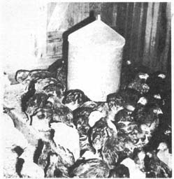

Raising chickens on wire. This is a typical ""frier"" producing set-up. These chicks have lived on wire from the time they were hatched and are much less susceptible to disease than those kept in litter.